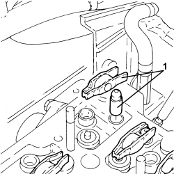

1036H57 HYDRAULIC TAPPETS (ALL) R.R
- Path
- Procedures > 10 ENGINE > 1036 TIMING SYSTEM > 1036H TAPPETS AND ROCKER SHAFTS > 1036H57 HYDRAULIC TAPPETS (ALL) R.R
- Kind
- repair procedure (removal / refitting; the operation number is the code)
- Applies to
- engines: 2.4 JTD 20v; all production periods
- Interactive page
- https://sloeber94.github.io/elrnDB-aBrrSpdr/en/#/946002958
Applies to: engines: 2.4 JTD 20v; all production periods
- On this car, it is not possible to remove/refit the hydraulic tappets on the car.
To perform this operation, remove/refit the power unit
Op. 1004B10 POWER UNIT WITH MANUAL GEARBOX - R.R
and then work at the bench, adapting the engine service procedures for this operation up to cylinder head extension removal.
1. Remove the rocker and the hydraulic tappet from each inlet and exhaust valve.
